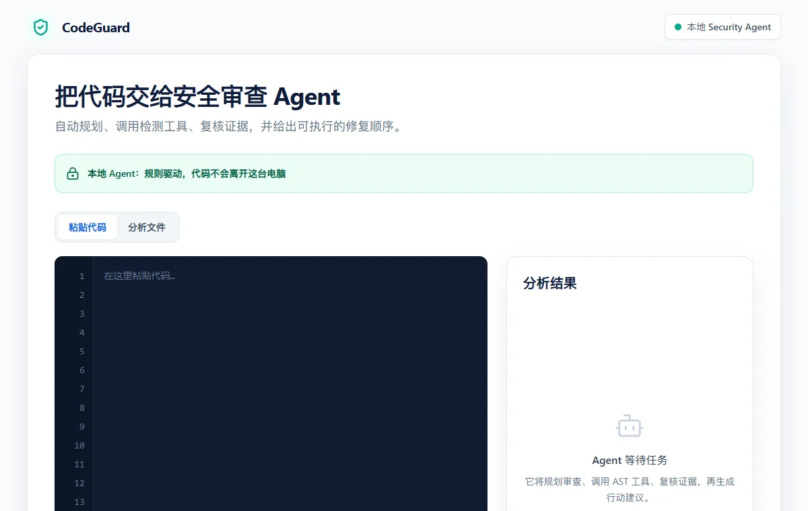

01 LIVE DEMO
codeguard / local security agent

49自动化测试0npm 漏洞
LOCAL-FIRST SECURITY AGENT
CodeGuard
在代码提交前完成多语言静态安全审查。浏览器版在 Web Worker 中本地分析，确定性规则负责发现问题，云端模型仅在用户同意后解释已验证证据。
- 问题：提交前缺少快速、可复核的安全反馈
- 我负责：规则引擎、证据复核、CLI 与 SARIF 交付
- 结果：49 项测试 · npm audit 0 漏洞